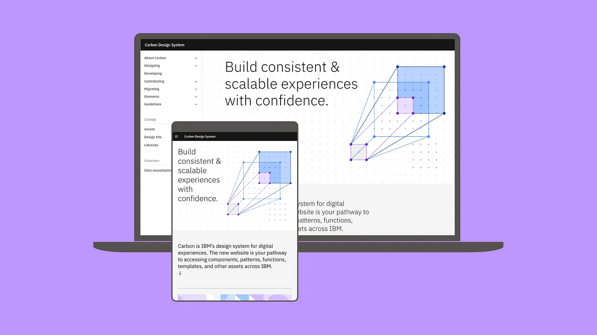
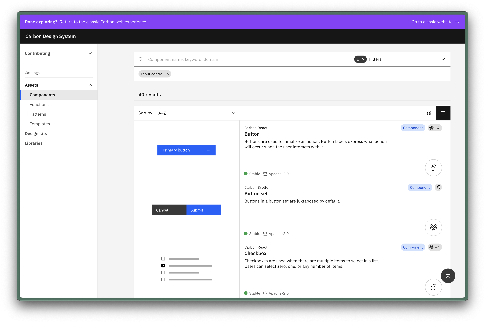
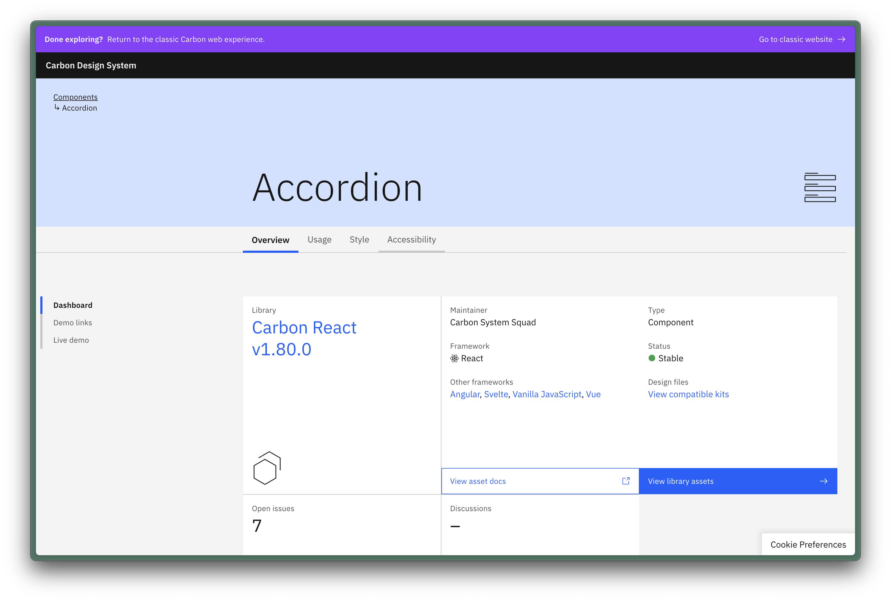
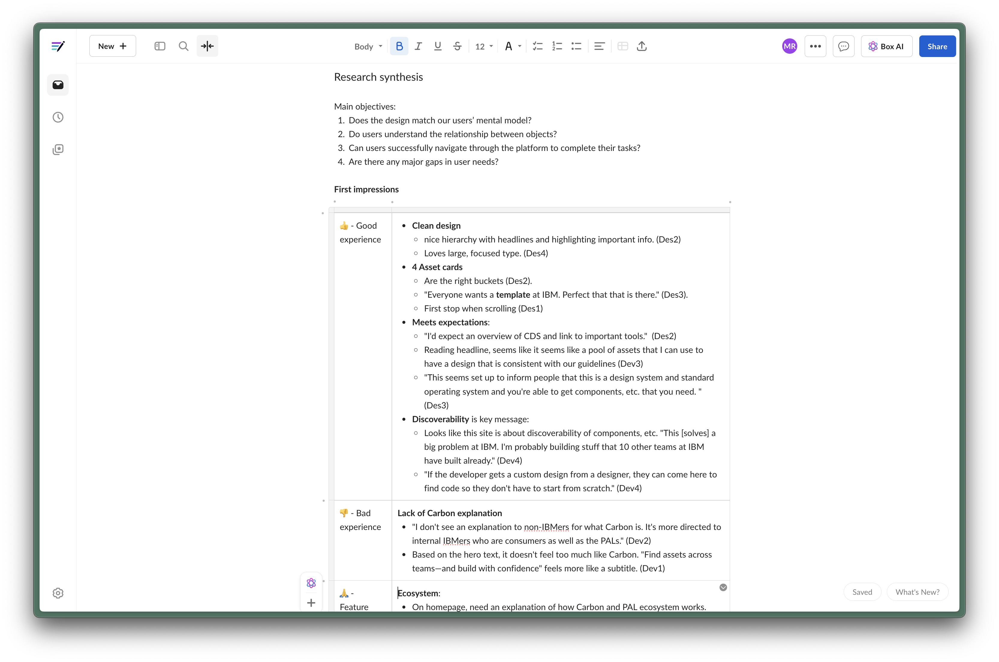
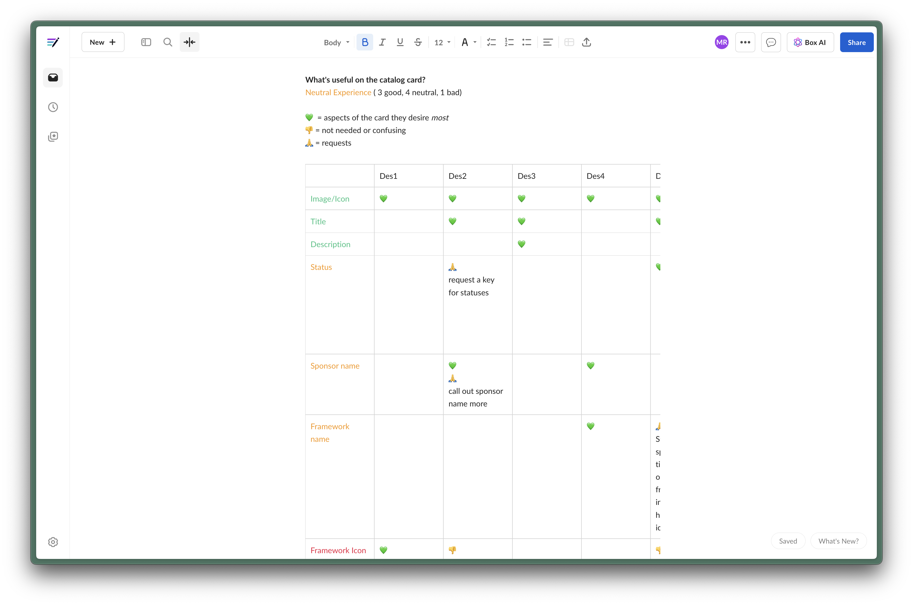
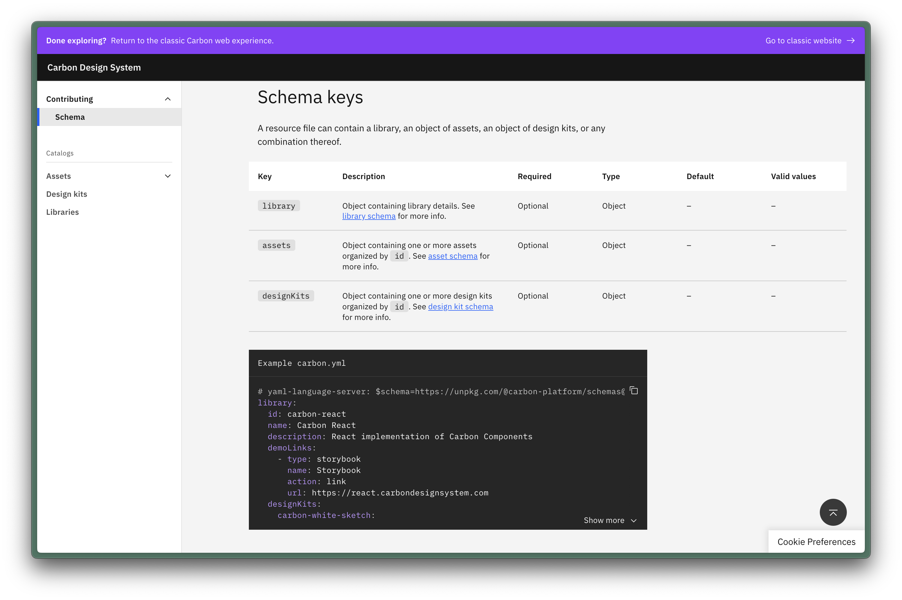

Building the Carbon Platform: Unifying IBM's Design and Code Ecosystem
Role: designer
March 2022 - December 2022

While the Carbon Design System served as the “core” library,
dozens of local systems emerged over the years to meet specific
product needs. These libraries were valuable but introduced style
inconsistencies, asset duplication, and siloed workflows.
Designers and developers often had to dig through multiple systems
to find usable components, and there was no unified way to
discover or contribute assets. Our team set out to solve this:
create a platform where IBM makers could find, use, and contribute
standardized design assets and code libraries—all in one place.
I worked across disciplines to bring the Carbon Platform to life.
I led user research, contributed both low and high-fidelity
designs, wrote front-end code for the platform itself, and helped
create a schema to index assets. This work was highly
cross-functional, requiring deep collaboration with designers,
developers, and library maintainers across the company.
I started with foundational research. I led interviews and
usability studies with internal IBM teams to understand how they
searched for assets, what barriers they encountered, and what a
“source of truth” would mean to them. These insights revealed a
strong need for standardization, clearer taxonomy, and better
tooling to support discovery and governance. The research directly
informed our core platform structure and the asset schema we later
developed.

From there, I moved into prototyping and interface design. Early
explorations focused on how to surface the right information at
the right time—balancing depth of content with discoverability. I
designed filtering patterns, content layouts, and taxonomy labels
that made it easier for users to browse and evaluate assets.

I tested design directions with users using varied methods. For
example, how quickly and easily a user could find a specific asset
that met all their requirements. I refined the experience based on
what they needed to trust and implement the assets they found.


On the development side, I helped build core features of the
platform, including the asset catalog interface and schema-driven
rendering logic. I helped develop a tagging structure powered
search and filtering, and contributed to our live indexing system
that keeps platform content current and version-aware. I also
helped migrate documentation from carbondesignsystem.com,
enhancing it with richer metadata and clearer pathways between
core and local systems.

A key outcome of this work I want to highlight was a shared schema
for indexing assets. I collaborated with library maintainers to
define asset metadata and governance standards. This schema now
powers how assets are categorized, displayed, and versioned across
the platform—and has enabled us to scale from a handful of
libraries to over 250 assets from more than 10 teams.